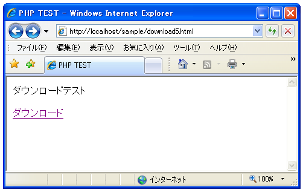
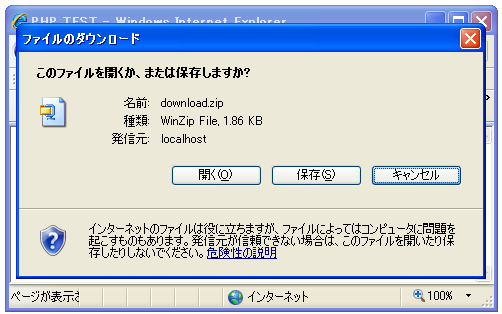
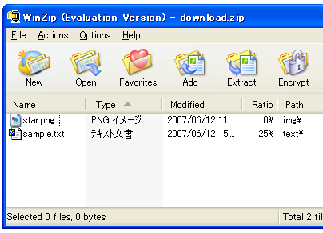

HTTP_Download_Archiveクラスを使用する
複数のファイルやディレクトリをアーカイブしてクライアントに送信するには現状ではHTTP_Downloadクラスの「sendArchive」メソッドではなくHTTP_Download_Archiveクラスの「send」メソッドを使います。
HTTP_Download_ArchiveクラスはArchive_Zipパッケージに含まれています。このパッケージの導入については『HTTP_Downloadパッケージのインストール』の下の方の記事を参照して下さい。
HTTP_Downloadクラスを利用する場合、プログラムの先頭で「HTTP/Download/Archive.php」ファイルを読み込む必要があります。
<?php
require_once("HTTP/Download/Archive.php");
?>
ではHTTP_Download_Archiveクラスの「send」メソッドについて確認します。このメソッドはクラスメソッドです。基本的にはHTTP_Downloadクラスの「sendArchive」メソッドと同じです。
HTTP_Download_Archive::send()
mixed send(
string $name,
mixed $files,
[string $type = HTTP_DOWNLOAD_TGZ],
[string $add_path = ''],
[string $strip_path = '']
)
引数： $name アーカイブファイルの名前 $files アーカイブの対象となるディレクトリやファイル名のリスト $type アーカイブのフォーマット (TAR, TGZ, BZ2 または ZIP) $add_path ファイルの前に追加するパス $strip_path ファイルから外すべきパス 戻り値： 成功時にはTRUE、失敗時にはPEAR_Error
引数については「sendArchive」メソッドと同じですので詳しくは『複数のファイルをアーカイブして送信する』を参照して下さい。
使い方としては次のようになります。
require_once("HTTP/Download/Archive.php");
HTTP_Download_Archive::send(
"download.zip",
array("./download/", "./download2/"),
HTTP_DOWNLOAD_ZIP
);
サンプルプログラム
では簡単なサンプルで実際に試してみます。
<?php
require_once("HTTP/Download/Archive.php");
HTTP_Download_Archive::send(
"download.zip",
array("./download/text/", "./download/img/"),
HTTP_DOWNLOAD_ZIP,
"",
"download"
);
?>
ダウンロード用PHPを呼び出すためのHTMLファイルを用意しました。
<html> <head><title>PHP TEST</title></head> <body> <p>ダウンロードテスト</p> <p> <a href="./pearhttpdownloadtest5.php">ダウンロード</a> </p> </body> </html>
ダウンロードするファイルはPHPファイルが置かれているディレクトリに「download」と言うディレクトリを作成し、その中に更に「text」と「img」ディレクトリを作成してから「text」ディレクトリの中には「sample.txt」ファイルを置き「img」ディレクトリの中には「star.png」を置いておきました。
ではダウンロード用HTMLファイルをWWWサーバに設置しブラウザで見てみると下記のように表示されます。

「ダウンロード」と書かれたリンクをクリックして下さい。

指定したアーカイブ名でダウンロードを行います。実際にダウンロードされたファイルを見てみると次のように指定したディレクトリに含まれていたファイルがアーカイブされていることが確認できます。

なお今回は「send」メソッドの5番目の引数にアーカイブされるファイルから取り除くパスを指定しています。本来「download/img」や「download/text」となるべきところが「download」が除外されて「img」や「text」に変わっています。
( Written by Tatsuo Ikura )

著者 / TATSUO IKURA
初心者～中級者の方を対象としたプログラミング方法や開発環境の構築の解説を行うサイトの運営を行っています。